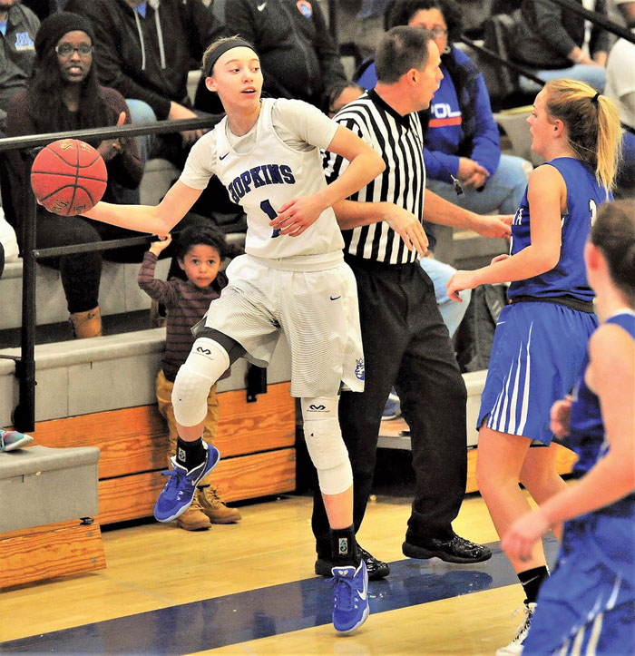
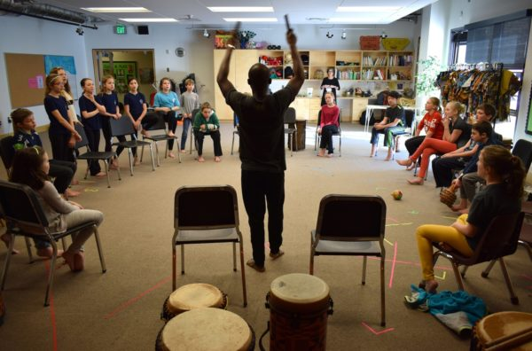

As the social contract frays
What does it mean to be polite?
THE AGE
OF RUDENESS
02.15.2017
By Jason Jenkins
SPORTS

Edina, Wayzata, and Hopkins All-state trio heads All-Lake team
During the 2016-17 Lake Conference girls basketball season, many
local players earned statewide attention.
Three of them – Edina senior forward Annika Jank, Wayzata sopho-
more forward Kallie Theisen and Hopkins ninth-grade guard Paige
Bueckers – were recently named to the Minnesota Girls Basketball
Coaches’ All-State team.
Bueckers is the youngest All-State player in Class 4A after a brilliant
season this winter. She led the Lake Conference in scoring with 21
points per game and helped the Royals to second place in the State
Tournament.
Jank finished her career as Edina’s all-time leading
rebounder and will take her talents to Colorado University in Boulder next
season. Theisen, who is a similar player to Jank, had a string of 12
double-doubles during her sophomore season with Wayzata.
. . . read more
EDUCATION
Armstrong senior’s distracted driving video among the top 10
To put his film-making skills to the test, Armstrong High School
senior Gabe Hostetler entered Discovery’s TeenDrive365 Video Challenge
and is on his way to winning $15,000 and the chance to work.
Hostetler’s video is among the top 10 finalists, of 1,500 submissions,
and viewers could vote for their favorite video through April 18.
Winners will be announced by the end of April. The first-place
winner will receive the opportunity to shoot the video into a
public service announcement with a Discovery film crew.
“It’s an honor to be selected among the nation’s most talented
young filmmakers,” Hostetler said.
From the script to casting, Hostetler created a one-minute distracted
driving video “One Decision.”
“I wanted to come at a teen car accident from a different perspective …
from the perspective of your loved ones and how much if would hurt them
if anything happened to you,” Hostetler said
. . . read more
COMMUNITY & PEOPLE

Blake School students explore West African drum and dance
It’s Tuesday morning in Wayzata, and school is in session at The Blake
School’s Highcroft Campus. It’s quiet – until it’s not – when a steady rhythm of West African drumming spills into the halls from a downstairs rehearsal room.
An investigatory look into the classroom reveals a drum circle of 18 fifth graders rehearsing for their spring play. Leading the group is Fatawu Sayibu, a Ghana-born master drummer, dancer and choreographer. Since early February, Sayibu has met with students from Blake’s Wayzata and Hopkins campuses. Drawing from a lifetime of experience, Sayibu has been teaching prekindergarten through fifth-grade students about West African culture through drumming and dance.
“I started doing performances when I was 4,” Sayibu, 33, said.
At 12 years old, Sayibu began teaching dance at a cultural center in Tamale, the capital town in the Northern Region of Ghana.
“Any time they would bring students from other schools, my friends and I would teach them,” he said.
. . . read more